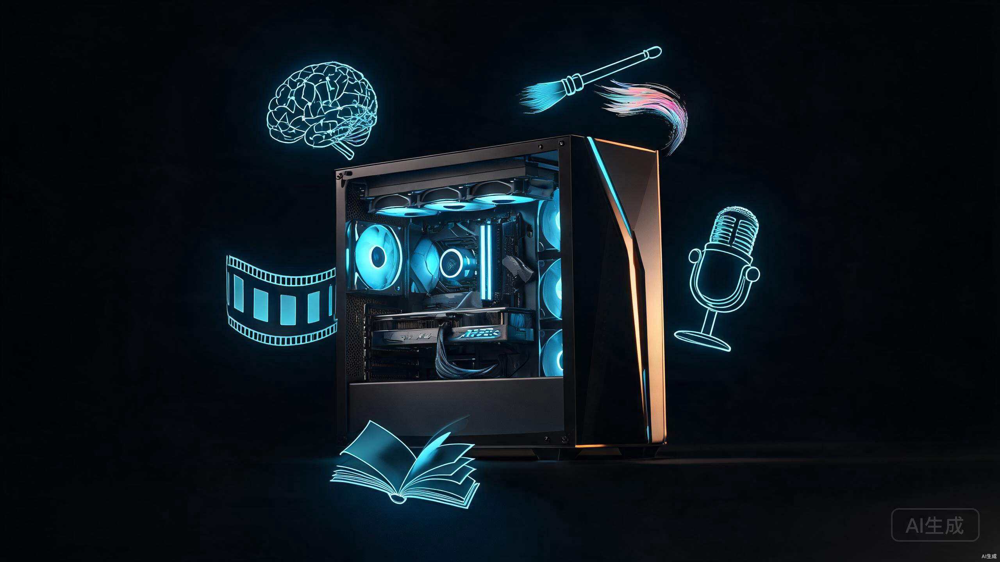
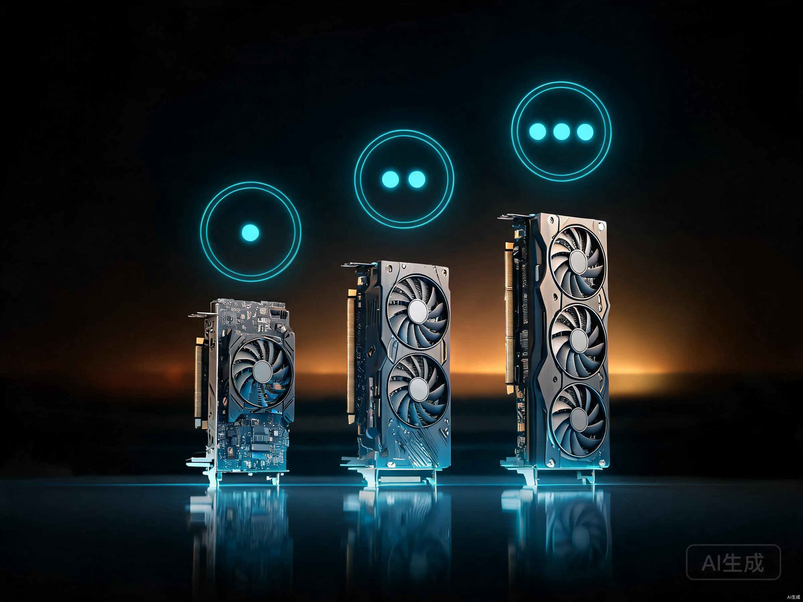
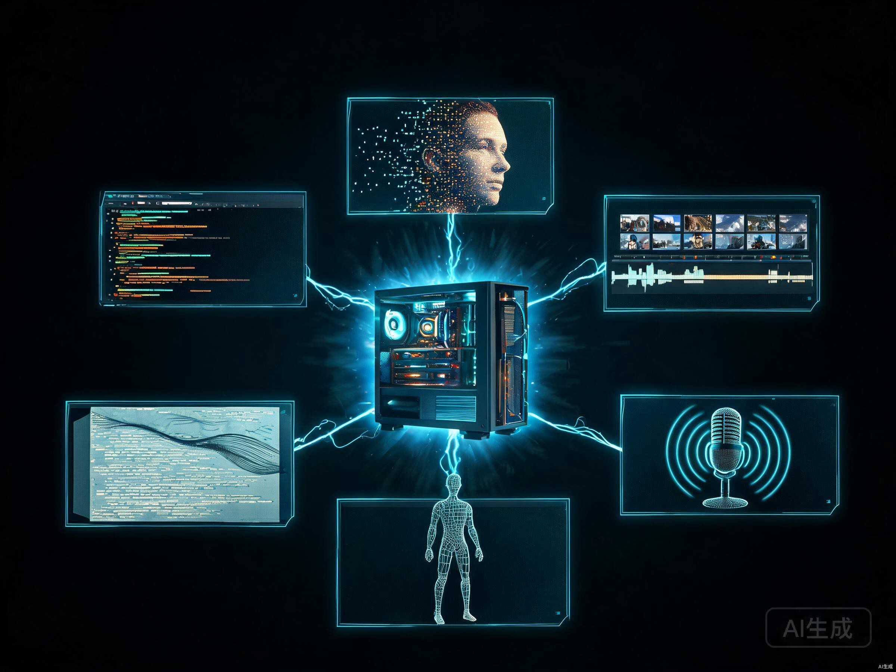

每月花几百块买各种AI会员，Midjourney出图要排队，GPT-4 API按token计费月底账单吓人，视频生成工具动不动就限速。算下来一年订阅费够装一台主机了。与其把钱烧在云端，不如装一台自己的AIGC工作站。
但问题来了：想跑GLM-5.2，想出图，想做视频，想写小说，想搞播客，到底需要什么配置？显卡买新的还是二手的？32GB显存够不够？每个月电费要多少？这篇文章把这些问题全部掰开揉碎，给出四档配置方案和最终的推荐答案。
一、GLM-5.2本地部署的残酷现实
先说最扎心的事。GLM-5.2是智谱AI 2026年发布的旗舰大模型，744B参数的MoE架构，每次推理激活40B参数[1]。这个参数量级意味着什么？直接看显存需求表：
| 量化精度 | 显存需求 | 个人PC可行性 | 备注 |
|---|---|---|---|
| BF16 原始精度 | ~1,510 GB | 不可能 | 需要约19张H100 80GB |
| FP8 量化 | ~750 GB | 不可能 | 需要约10张H100 |
| Q4_K_M (4-bit) | ~376-476 GB | 不可能 | 超出任何消费级硬件上限 |
| 2-bit 量化 | ~238-241 GB | 勉强可行 | 需256GB统一内存，Mac Studio M3 Ultra可跑3-9 tok/s |
| 1-bit 量化 | ~223 GB | 勉强可行 | 质量损失过大，实用性存疑 |
结论很明确：消费级PC无法本地部署完整版GLM-5.2。即便用最激进的2-bit量化，也需要至少256GB内存，目前只有Mac Studio M3 Ultra 256GB版本能勉强跑起来，速度也只有3-9 tokens/s[2]。组装机走x86+GPU路线，想凑够256GB显存需要十几张显卡，完全不现实。
下面是本地可以流畅运行的替代模型，按显存需求排列：
| 模型 | 参数量 | Q4量化显存 | FP16显存 | 最低显卡 |
|---|---|---|---|---|
| Qwen2.5 7B | 7B | ~5 GB | ~14 GB | RTX 3060 12GB |
| GLM-4 9B | 9B | ~6 GB | ~18 GB | RTX 3060 12GB |
| Qwen2.5 14B | 14B | ~10 GB | ~28 GB | RTX 4060 Ti 16GB |
| Qwen2.5 32B | 32B | ~20 GB | ~64 GB | RTX 3090 24GB |
| DeepSeek-V3 Lite | 16B MoE | ~10 GB | ~32 GB | RTX 4060 Ti 16GB |
32B级别的模型在Q4量化下需要约20GB显存，RTX 3090/4090的24GB正好能装下。这是消费级显卡能跑到的质量上限，日常对话、写作、代码辅助完全够用。
二、显存才是硬门槛

组装AIGC主机和装游戏机最大的区别在于：游戏机看GPU算力，AIGC机看显存容量。模型权重必须完整加载到显存里才能用GPU加速推理，显存不够就是不够，算力再强也白搭。
这就引出一个核心原则：买显卡先看显存容量，再看核心性能。一张RTX 4060 Ti 16GB虽然算力不如RTX 4060 Ti 8GB版本（因为显存频率降低），但在AIGC场景下反而更实用，因为能加载更大的模型。
下面是2026年7月主流显卡的AIGC适配分析：
| 显卡 | 显存 | 参考价格 | 新/二手 | AIGC定位 |
|---|---|---|---|---|
| RTX 3060 12GB | 12 GB | ¥1,800-2,200 | 全新 | 入门首选，SD出图+7B模型 |
| RTX 4060 Ti 16GB | 16 GB | ¥3,099-3,599 | 全新 | 甜品之选，SDXL+14B模型 |
| RTX 3090 24GB | 24 GB | ¥5,500-7,500 | 二手 | 性价比之王，32B模型+视频生成 |
| RTX 4090 24GB | 24 GB | ¥11,000-14,000 | 二手 | 全能选手，算力+显存双强 |
| RTX 5090 32GB | 32 GB | ¥23,000-32,000 | 全新 | 旗舰天花板，预算充足首选 |
几个关键判断：
12GB是底线。SD 1.5出图勉强够用，SDXL需要开低分辨率模式，7B量化模型能跑但留不了多少上下文窗口。低于12GB基本告别AIGC。
16GB是甜品线。SDXL正常出图、Flux量化版能跑、14B模型流畅推理、LoRA微调可行。对大多数人来说这个档位性价比最高。
24GB是分水岭。32B模型Q4量化正好装下，视频生成（SVD、CogVideoX）不再爆显存，LoRA训练批量大小可以开大。RTX 3090二手是目前最划算的AIGC显卡。
32GB是未来线。RTX 5090的32GB GDDR7显存能跑70B模型的Q4量化，视频生成可以开高分辨率。但3万块的价格已经不是「个人主机」的范畴了。
三、四档配置方案
结合上面的显卡分析，给出四档完整的组装方案。价格基于2026年7月京东/淘宝/闲鱼实际行情，包含CPU、主板、内存、硬盘、电源、机箱、散热器全部配件。
GPU RTX 3060 12GB
RAM 32GB DDR4 3200
SSD 1TB NVMe Gen3
PSU 550W 铜牌
适合 SD出图 / 7B模型 / 基础TTS
GPU RTX 4060 Ti 16GB
RAM 64GB DDR5 6000
SSD 2TB NVMe Gen4
PSU 750W 金牌
适合 SDXL+LoRA / 14B模型 / Flux量化
GPU RTX 3090 24GB (二手)
RAM 128GB DDR5 6000
SSD 2TB NVMe + 4TB HDD
PSU 1000W 金牌全模
适合 32B模型 / 视频生成 / LoRA训练
GPU RTX 5090 32GB
RAM 128GB DDR5 6400
SSD 4TB NVMe Gen5
PSU 1200W 白金全模
适合 70B Q4模型 / 高清视频生成 / 全覆盖
四个档位的定位差异很大。入门档适合「先试水」，用最小的成本验证AIGC能不能跑起来。甜品档是「日常够用」，覆盖大部分个人创作需求。专业档是「认真干活」，32B模型和视频生成是它的主场。旗舰档是「一步到位」，预算充足直接拉满。
几个配件选择的补充说明：
CPU不是瓶颈但别太差。AIGC主要靠GPU，但数据预处理、模型加载、多任务调度都需要CPU。i5-12400F六核十二线程是底线，i5-14600KF的14核20线程是甜品线。i9只在多卡场景下有意义。
内存宁多勿少。32GB是底线，64GB是推荐，128GB是理想。模型加载、批量图片处理、视频帧序列都会吃大量内存。32GB跑14B模型时系统就开始捉襟见肘了。
SSD速度直接影响加载时间。一个32B模型Q4量化文件约20GB，Gen3 SSD加载需要30秒，Gen4降到15秒，Gen5可以到8秒。2TB容量是起点，模型文件动辄5-50GB，装几个就满了。
电源要留余量。RTX 3090满载350W，RTX 5090满载575W[3]，加上CPU和其他配件，系统峰值功耗可能超过800W。电源额定功率至少是系统峰值功耗的1.3倍，否则高负载时容易触发保护机制重启。
四、AIGC场景覆盖矩阵

用户的需求很明确：大模型对话、图片识别与生成、视频生成、写小说、做播客视频。下面这张矩阵表把每个场景和四档配置的匹配关系列清楚。
| AIGC场景 | 显存需求 | 入门档 12GB |
甜品档 16GB |
专业档 24GB |
旗舰档 32GB |
|---|---|---|---|---|---|
| SD 1.5 图片生成 | 4-6 GB | 流畅 | 流畅 | 秒出 | 秒出 |
| SDXL 图片生成 | 8-12 GB | 勉强 | 流畅 | 流畅 | 秒出 |
| Flux.1 图片生成 | 12-24 GB | 不可用 | 量化版 | 流畅 | 流畅 |
| 图片识别 (LLaVA) | 8-14 GB | 7B版 | 13B版 | 34B版 | 34B版 |
| 7B-14B 大模型对话 | 5-10 GB | 流畅 | 流畅 | 秒回 | 秒回 |
| 32B 大模型对话 | 20-24 GB | 不可用 | 不可用 | Q4量化 | 流畅 |
| 70B 大模型对话 | 40-48 GB | 不可用 | 不可用 | 不可用 | Q4勉强 |
| 小说写作 (长上下文) | 10-20 GB | 7B+短上下文 | 14B+长上下文 | 32B+长上下文 | 32B+超长上下文 |
| TTS 语音合成 | 4-8 GB | 流畅 | 流畅 | 流畅 | 流畅 |
| 声音克隆 (GPT-SoVITS) | 6-10 GB | 可用 | 流畅 | 流畅 | 秒回 |
| 视频生成 (AnimateDiff) | 8-12 GB | 慢 | 可用 | 流畅 | 流畅 |
| 视频生成 (SVD/CogVideoX) | 16-24 GB | 不可用 | 慢 | 流畅 | 秒出 |
| HunyuanVideo 高清视频 | 24-32 GB | 不可用 | 不可用 | 量化版 | 流畅 |
| LoRA 微调训练 | 12-24 GB | SD1.5 | SDXL | SDXL大批量 | Flux |
| 播客视频 (TTS+数字人) | 10-16 GB | 低画质 | 可用 | 流畅 | 高画质 |
从矩阵可以看出，入门档能覆盖约50%的场景但多为「勉强可用」或「慢」。甜品档覆盖约75%，是日常创作的最低门槛。专业档覆盖约90%，只有70B模型和顶级视频生成跑不了。旗舰档几乎全覆盖，唯一短板是完整版GLM-5.2仍需走API。
五、组装避坑指南
配件买回来不等于能跑好。AIGC主机有几个特殊的坑，普通装机攻略不会告诉你。
六、日常运营费用
装完机器不是结束，每个月还要掏电费。下面算一笔明细账。
电费
AIGC主机和普通办公电脑不同，GPU高负载时功耗是平时的3-5倍。按每天使用4小时（GPU满载）、其余时间待机计算：
| 配置档位 | 满载功耗 | 待机功耗 | 日均耗电 | 月电费 | 年电费 |
|---|---|---|---|---|---|
| 入门档 (3060) | ~280W | ~60W | ~1.5度 | ~¥35 | ~¥420 |
| 甜品档 (4060Ti) | ~350W | ~70W | ~1.8度 | ~¥42 | ~¥504 |
| 专业档 (3090) | ~550W | ~80W | ~2.7度 | ~¥63 | ~¥756 |
| 旗舰档 (5090) | ~800W | ~90W | ~3.8度 | ~¥89 | ~¥1,068 |
电费按居民用电0.6元/度计算。如果每天使用8小时，电费翻倍。专业档每天8小时月电费约¥126，旗舰档约¥178。相比云端GPU租赁（RTX 4090云实例约¥3-5/小时），自己装机跑8小时电费不到¥6，成本优势非常明显。
API调用费
本地跑不了的GLM-5.2，走API按量付费。智谱开放平台的GLM-5.2 API定价大致如下：
| 使用场景 | 日均调用量 | 月费用估算 | 备注 |
|---|---|---|---|
| 日常对话 (轻度) | ~50次 | ~¥15-30 | 每次约2000 token |
| 写作辅助 (中度) | ~200次 | ~¥60-120 | 长文本生成 |
| 代码+分析 (重度) | ~500次 | ~¥150-300 | 含上下文传递 |
关键策略是模型分流：日常简单对话用本地Qwen2.5 14B（免费），复杂推理和长文写作走GLM-5.2 API。这样API月费可以控制在¥30-80，加上电费总运营成本每月不到¥150。
软件成本
AIGC软件栈几乎全是开源免费的：
# 大模型推理 ollama # 一键部署本地LLM，支持GGUF量化 vllm # 高性能推理服务，支持多模型并发 lm-sys # WebUI对话界面 # 图片生成 ComfyUI # 节点式工作流，灵活强大 stable-diffusion-webui # 经典WebUI，上手简单 InvokeAI # 统一画布，适合画师 # 视频生成 AnimateDiff # 基于SD的动画生成 ComfyUI-SVD # Stable Video Diffusion节点 # 语音合成 GPT-SoVITS # 少样本声音克隆 CosyVoice # 阿里开源TTS，情感丰富 fish-speech # 轻量级语音合成 # 数字人 SadTalker # 图片+音频生成说话视频 MetaHuman-Stream # 实时数字人推流 # 成本：全部 $0
唯一可能需要付费的是一些高质量模型权重。比如Flux.1 Dev需要非商业授权（Pro版$12/月），某些优质SDXL基础模型在CivitAI上需要付费下载。但这些是可选项，免费模型已经足够日常使用。
维护成本
硬件维护主要是两点：每年清一次灰、每两年换一次GPU硅脂。如果用的是二手3090/4090，到手第一件事就是换显存导热垫（材料费约¥50-80）。水冷散热器的液冷液建议3年更换一次（约¥100-200）。这些零零散散加起来年均维护成本约¥200-300。
七、最佳推荐
分析了这么多，到底该选哪个配置？分三种情况给建议。
核心配置：i5-14600KF + RTX 4060 Ti 16GB + 64GB DDR5
理由：16GB显存是AIGC的黄金分割线，SDXL出图、14B模型对话、Flux量化版、LoRA微调全部能跑。64GB内存足够多开模型不卡顿。月电费不到¥50，API调用费¥30-60，总运营成本每月不到¥100。覆盖75%的AIGC场景，日常创作绰绰有余。
核心配置：i7-14700K + RTX 3090 24GB (二手) + 128GB DDR5
理由：24GB显存是32B模型Q4量化的门槛，也是视频生成（SVD、CogVideoX）的起点。二手3090目前¥6,000-7,500，性价比极高。128GB内存可以同时加载多个模型切换使用。覆盖90%的AIGC场景，月运营成本约¥100-150。这是「认真干活」的配置，投入产出比最高。
核心配置：i9-14900K + RTX 5090 32GB + 128GB DDR5
理由：32GB GDDR7显存能跑70B模型Q4量化，高清视频生成不再受限。575W的满载功耗意味着电费会高一些（月¥90+），但算力翻倍带来的效率提升远超电费差异。这张卡至少能战3年不落伍。如果预算不是问题，直接上这个配置。
最终结论
如果只给一个建议：选专业档二手3090方案。
理由很简单。24GB显存是AIGC的分水岭，32B模型和视频生成都在这个门槛之后。甜品档16GB虽然性价比高，但Flux全量版跑不了、32B模型装不下，用了半年就会想升级。旗舰档5090性能确实强，但3万块的价格对个人用户来说投入过大，且32GB显存的边际效用递减——70B模型Q4量化虽然能跑，但推理速度也只有5-8 tokens/s，体验并不好。
二手3090的24GB在当前节点是最优解。¥6,000-7,500的显卡价格加上其他配件，总投入¥12,000-16,000，比甜品档多花一倍但能力翻倍。90%的AIGC场景全覆盖，32B模型Q4量化20+ tokens/s流畅对话，SDXL出图2秒一张，SVD视频生成4秒一段。月运营成本约¥100-150，一年不到¥2,000。
至于GLM-5.2，本地跑不了就跑不了，该用API就用API。本地用Qwen2.5 32B处理日常对话和写作，复杂推理走GLM-5.2 API按量付费。这种混合策略既不浪费硬件，也不为用不上的算力买单。
下面是专业档推荐配置的完整清单：
# 专业档推荐配置 - 2026年7月 CPU Intel i7-14700K ¥2,599 主板 技嘉 Z790 AORUS ELITE AX ¥1,299 显卡 RTX 3090 24GB (二手/个人卖家) ¥6,500 内存 金士顿 Fury 128GB (4x32) DDR5 6000 ¥2,400 SSD 三星 990 Pro 2TB ¥1,099 HDD 西数蓝盘 4TB (素材存储) ¥599 电源 海韵 Focus GX-1000W 金牌全模 ¥899 散热 利民 Frozen Magic 360 水冷 ¥399 机箱 追风者 G500A 网孔版 ¥499 风扇 利民 TL-C12C x5 ¥150 # ────────────────────────────── 合计 ¥16,443 # 预计月运营: 电费~¥63 + API~¥50 = ~¥113 # 预计年运营: ~¥1,356
这套配置跑通AIGC全流程没有任何短板。图片生成用ComfyUI+SDXL/Flux，视频生成用SVD/CogVideoX，大模型对话用Ollama跑Qwen2.5 32B，复杂任务走GLM-5.2 API，声音克隆用GPT-SoVITS，数字人用SadTalker。写小说、做播客视频、出图、跑模型，一台机器全搞定。
参考资料
- 智谱AI GLM-5.2 技术报告 https://github.com/zai-org/GLM-5
- GLM-5.2 量化部署方案与硬件需求分析 https://smzdm.com
- NVIDIA RTX 5090 官方规格页 https://www.nvidia.com/rtx-5090
- 2026年AI PC组装指南：四档配置方案与价格 https://juejin.cn
- Ollama 本地大模型部署文档 https://ollama.com
- ComfyUI 图片生成工作流框架 https://github.com/comfyanonymous/ComfyUI